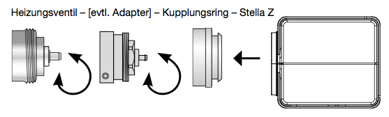

EUR_STELLAZ
Firmware Version : 0.4 |
 |
Kurzinfo
S Dieses Gerät ist ein Z-Wave-Funksensor. Alle Bedienung erfolgt durch einen kleinen Taster hinter der runden Ausparung am Gehäuse, der mittels einer Büroklammer oder des mitgelieferten Werkzeuges betätigt wird. Das Drücken dieses Taster für 2.5 Sekunden schaltet das Gerät in den Installiermodus, in dem die Ventilsteuerung komplett eingefahren ist. 5 Sekunden langes Drücken inkludiert und exkludiert das Gerät in bzw. aus das Z-Wave-Netz. Ein einfacher Druck auf die Taste weckt das Gerät auf.
Achtung: Das Gerät muss mit dem Ventil verbunden sein, um irgendwelche Z-Wave Funktionen auszuführen. Ohne den Gegendruck durch das Ventil erkennt das Stellglied einen Fehler und wird keine Funkoperationen durchführen.
Weitergehende Informationen finden sich in den jeweiligen Abschnitten dieses Handbuches.
Was ist Z-Wave?
Dieses Produkt entspricht dem Z-Wave-Standard. Z-Wave ist der internationale Funkstandard zur Kommunikation von Geräten im intelligenten Haus. Z-Wave-Geräte funken in Europa auf der Frequenz von 868.42 MHz.Z-Wave ermöglicht eine sichere und stabile Kommunikation indem jede Nachricht vom Empfänger rückbestätigt wird (Zweiwege-Kommunikation) und alle netzbetriebenen Geräte Nachrichten weiterleiten (Routing) können, wenn eine direkte Funkbeziehung zwischen Sender und Empfänger gestört ist.
Dank Z-Wave können Produkte unterschiedlicher Hersteller miteinander in einem Funknetz verwendet werden. Damit ist auch dieses Produkt mit beliebigen anderen Produkten anderer Hersteller in einem gemeinsamen Z-Wave Funknetz einsetzbar.
Z-Wave unterscheidet zwischen Controllern und Slaves. Slaves sind entweder Sensoren S, die Daten ermitteln oder Aktoren A, die Aktionen ausführen (Sensoren und Aktoren sind mitunter in einem Gerät vereint). Controller sind entweder statische netzgespeiste Controller C (auch IP-Gateways genannt) oder mobile batteriebetriebene Controller (Fernbedienungen, Batteriewandschalter)R. Damit ergeben sich eine Reihe prinzipieller Kommunikationsmöglichkeiten in einem Z-Wave-Netz:

- Controller steuern Aktoren.
- Aktoren melden Änderungen ihres Schaltzustandes
- Sensoren melden Messwerte oder Statusänderungen an Controller
- Sensoren steuern Aktoren direkt bei Ereignissen
- Aktoren steuern andere Aktoren
- Fernbedienungen erzeugen Ereignisse in einem statischen Controller, die zum Beispiel zum Steuern von Szenen genutzt werden
- Fernbedienungen steuern Aktoren
Controller können in einem Z-Wave Netzwerk zwei unterschiedliche Rollen einnehmen. Es gibt immer genau einen Primärcontroller der das Netzwerk steuert und Geräte in das Netzwerk inkludiert oder aus dem Netzwerk exkludiert. Dieser Controller kann weiter Nutzerfunktionen - zum Beispiel Tasten - besitzen. Alle anderen Controller mit Nutzerfunktionen erfüllen keine Managementaufgaben. Sie heißen Sekundärcontroller. Trotzdem verfügen sie - sozusagen als Backup - über alle notwendigen Informationen über das Netz. Das Übersichtsbild zeigt, das - batteriegestützt - Sensoren nicht direkt mit - batteriebetriebenen - Fernbedienungen kommunizieren. Sie senden nur Daten an statische Controller oder steuern Aktoren direkt.
Produktbeschreibung
StellaZ ist ein kabelloser Z-Wave gesteuerter Stellantrieb geeignet für Heizungs-, Lüftungs- und Klimaanlagen. Sensor, Regler und Stellantrieb sind in einem Gerät vereint und ermöglichen damit eine autarke energieeffiziente Raumregelung. Das Gerät verfügt über vier verschiedene Betriebsmodi (Normal, Energiepsaren, Frostschutz, direkte Ventil-Kontrolle per Funk) zum Steuern und Regeln der Temperatur. Diese kann auch per Funk aus dem Gerät ausgelesen werden. Offene Fenster werden automatisch erkannt und führen zu einer 20 - minütigen Reduzierung der Heizleistung, um Energie zu sparen. Weitere Funktionen des StellaZ sind:
- sehr hohe Stellgenauigkeit, Stellzeit nur ca. 3 s/mm, geräuscharmer Lauf, max. Ventilhub: 4 mm
- Anschluss: M 30 x 1,5, Adapter für andere Ventiltypen (z.B. Heimeier, Danfoss, Honeywell Braukmann, Honeywell MNG, Oventrop ab ca. 1996 u.a.) sind im Lieferumfang enthalten
- Demontage mit Sicherheitsmechanismus, nur mit beiliegendem Werkzeug abnehmbar
Batterien
Dieses Gerät wird mit Batterien betrieben. Nur Batterien des angegebenen Typs verwenden. Niemals alte und neue Batterien im gleichen Gerät vermischen. Gebrauchte Batterien enthalten gefährliche Stoffe und dürfen nicht mit dem Hausmüll entsorgt werden!
Batterietyp: 2 * AA
Installationsanleitung
Montage

Die Montage ist problemlos auf allen bekannten Ventilunterteilen ohne Schmutz und Wasserflecken möglich,
da der Heizwasserkreis nicht unterbrochen werden muss.
- Falls benötigt einen passenden Ventil-Adapter auswählen und diesen auf das Ventil montieren.
- Batterien einlegen. Ein Drücken auf den kleinen Taster hinter der Gehäuseaussparung für 2.5 Sekunden schaltet das Gerät in den Insallation-Modus. Dabei wird zur besseren Montage die Ventilsteuerung komplett eingefahren.
- Ein weiteres Drücken auf den Taster startet die Kalibrationsfunktion, bei der die Position und die Endlagen des Ventils automatisch erkannt werden. Ohne Tastendruck startet dieser Modus nach ca. 3 Minuten automatisch und das Gerät geht in den Schlafmodus.
- Den Kupplungsring auf das Ventil bzw. auf den Adapter drehen.
- StellaZ auf das Kupplungsstück aufsetzen, bis das Gerät hörbar einrastet.
Achtung: Das Gerät muss mit dem Ventil verbunden sein, um irgendwelche Z-Wave Funktionen auszuführen. Ohne den Gegendruck durch das Ventil erkennt das Stellglied einen Fehler und wird keine Funkoperationen durchführen.
Demontage
- Beide Spitzen des Entriegelungswerkszeug (1) in die Öffnung einsetzen.
- Stella Z vom Adapter/Ventil abziehen.

Verhalten des Gerätes im Z-Wave Netz
I Im Auslieferungszustand ist das Gerät mit keinem Z-Wave-Netz verbunden. Damit es mit anderen Z-Wave Geräten kommunizieren kann, muss es in ein bestehendes Z-Wave Netz eingebunden werden. Dieser Prozess wird bei Z-Wave Inklusion genannt. Geräte können Netzwerke auch wieder verlassen. Dieser Prozess heißt bei Z-Wave Exklusion. Beide Prozesse werden von einem Controller gestartet, der dazu in einen Inklusion- bzw. Exklusion-Modus geschaltet werden muss. Das Handbuch des Controllers enthält Informationen, wie er in diese Modi zu schalten ist. Erst wenn der Controller des Z-Wave Netzes im Inclusion-Modus ist, können Geräte hinzugefügt werden. Das Verlassen des Netzes durch Exklusion führt zum Rücksetzen dieses Gerätes in den Auslieferungszustand.
Das Gerät wird durch 5 Sekunden Drücken des Taster hinter der runden Aussparung am Gehäuse inkludiert und auch exkludiert. Direkt nach dem Einsetzen der Batterien befindet sich das Gerät 3 Minuten lang im Auto-Inklusion-Modus und wird von einem Controller im Inclusion-Modus ohne Bestätigung durch Tastendruck inkludiert.
Bedienung des Gerätes
Das Gerät verfügt nicht über eine lokale Steuermöglichkeit sondern wird komplett per Funk von einer Z-Wave-fähigen Funkzentrale aus gesteuert. Der Thermostat verfügt über 4 Betriebszustände, die über Funk umgeschaltet werden können:
- Frostschutz: Der Raum wird auf die Frostschutztemperatur von 6 °C geregelt.
- Komfort: Der Raum wird auf die Komforttemperatur geregelt. Diese beträgt bei Auslieferung 22 °C und kann per Z-Wave Kommando 'Thermostat Setpoint' zwischen 0 °C und 50 °C geändert werden. Dieser Modus ist bei Auslieferung aktiv.
- Energiesparen: Der Raum wird auf die Energiespartemperatur geregelt. Diese beträgt bei Auslieferung 18 °C und kann per Z-Wave Kommando 'Thermostat Setpoint' zwischen 0 °C und 50 °C geändert werden.
- Direktsteuerung: In diesem Modus ist es möglich, das Ventil direkt per Z-Wave Funkkommandos 'Switch Multilevel' in eine bestimmte Position zu setzen und damit die Regelung im Thermostat zu deaktivieren.
Zusätzlich zur Regelung oder direkten Steuerung des Stellventils kann die am Gerät ermittelte Ist-Temperatur per Funk ausgelesen werden (implementiert Kommunikationsmuster 3 mittels Z-Wave Kommando 'Sensor Multilevel'). Das Gerät dient also zusätzlich als Temperatursensor im Raum. Der Temperatursensor benötigt einige Zeit bis zu korrekten Anzeige und kann daher direkt nach der Inklusion noch 0 °C anzeigen. Spätestens nach dem ersten regelmäßigen Aufwecken des Gerätes ist der Temperaturwert jedoch korrekt. Das Umschalten der Modi erfolgt per Funk über die das Kommando 'Thermostat Mode" oder 'Basic'. Dabei gelten folgende Zuordnungen:
- Frostschutz: BASIC SET 0x01, THERMOSTAT MODE SET 0x00
- Energiesparen: BASIC SET 0x00, THERMOSTAT MODE SET 0x0b
- Komfortheizen: BASIC SET 0xff, THERMOSTAT MODE SET 0x01
- Direktsteuerung: BASIC SET 0xfe, THERMOSTAT MODE SET 0x1f
Kommunikation mit einem batteriebetriebenen Gerät
W Das Gerät ist batteriegespeist und damit in der Regel in einem Tiefschlafmodus um Strom zu sparen. Im Tiefschlafmodus kann das Gerät keine Funksignale empfangen. Daher wird ein (statischer) Controller benötigt, der netzgespeist und damit immer funkaktiv ist. Dieser Controller - zum Beispiel ein IP-Gateway - verwaltet eine Nachrichten-Mailbox für dieses batteriegespeiste Gerät, in dem Nachrichten an dieses Gerät zwischengespeichert werden. Ohne einen solchen statischen Controller wird die Nutzung dieses batteriebetriebenen Gerätes sehr schnell zur Entladung der Batterie führen oder die Nutzung ist komplett unmöglich.
Dieses Gerät weckt regelmäßig auf, meldet dies durch Aussenden einer sogenannten Wakeup-Notifikation und leert dann seine Mailbox im statischen Controller. Dafür muss bei der Inclusion die Node-ID des Controllers und ein Aufweckinterval definiert werden. Erfolgt die Inklusion durch einen statischen Controller wie zum Beispiel ein IP-Gateway, wird dieser Controller diese Konfiguration automatisch erledigen und in der Regel eine Nutzerschnittstelle anbieten, um das Aufweckinterval den Nutzerbedürfnissen anzupassen. Das Aufweckinterval ist ein Kompromiss zwischen maximaler Batterielaufzeit und minimaler Reaktionszeit des batteriegespeisten Gerätes.
Ein Klick auf den Taster hinter der runden Aussparung am Gehäuse weckt das Gerät auf. Er bleibt danach 5 Sekunden wach. Das Aufwachinterval kann in einem Bereich von 4 min bis zu einem halben Jahr gewählt werden. Der voreingestellte Wert beträgt 7 Tage.
Es ist möglich die Gerätenummer 255 als Zielgerät für die Wakeup-Notifikation anzugeben. In diesem Falle wird die Nachricht als Broadcast an alle Geräte mit direkter Funkverbindung gesendet. Dem Vorteil der sofortigen Benachrichtigung steht als Nachteil gegenüber, das das Gerät gegebenenfalls mehr Zeit im aktiven Modus und damit mehr Batterieladekapazität verbraucht.
Node Information Frame
NIF Der Node Information Frame ist die Visitenkarte eines Z-Wave Gerätes. Es ist ein spezielles Datenpaket, in dem der Gerätetyp sowie die Funktionen des Gerätes bekanntgemacht werden. Inklusion und Exklusion eines Gerätes wird von diesem mit einem Node Information Frame beantwortet. Zusätzlich kann der Node Information Frame für bestimmte Konfigurationsprozesse des Z-Wave Netzes - zum Beispiel das Setzen von Assoziationen - benötigt werden.
Ein Klick auf den Taster hinter der runden Aussparung am Gehäuse sendet einen Node Information Frame aus.
Bedeutung der LED-Signale
- Z-Wave-OK: 2 Sekunden Grün
- Z-Wave-Fehler: 2 Sekunden Rot
- Netzweite Inklusion: blinkt Rot-Grün
- Installier-Modus: blinkt grün
- Interner Fehler: blinkt rot
Kommandoklassen
Unterstützte Kommandoklassen- Basic (Version 1)
- Thermostat Mode (Version 3)
- Thermostat Setpoint (Version 3)
- Wake Up (Version 2)
- Version (Version 1)
- Multilevel Switch (Version 3)
- Battery (Version 1)
- Multilevel Sensor (Version 4)
- Manufacturer Specific (Version 1)
- Node Naming and Location (Version 1)
Technische Daten
| Schutzklasse | IP 20 |
| Batterietyp | 2 * AA |
| Explorer Frames | Ja |
| SDK | 4.54 pl1 |
| Geräteart | Slave with routing capabilities |
| Allgemeiner Z-Wave-Gerätetyp | Thermostat |
| Spezieller Z-Wave-Gerätetyp | Thermostat General V2 |
| Router | Nein |
| FLiRS | Nein |
| Firmware Version | 0.4 |
Erläuterung Z-Wave-spezifischer Begriffe
- Controller... ist ein Z-Wave-Gerät mit erweiterten Fähigkeiten zur Verwaltung eines Netzes. Dies sind in der Regel Gateways oder Fernbedienungen. Batteriegespeiste Wandschalter können auch Controller sein.
- Slave... ist ein Z-Wave-Gerät mit erweiterten Fähigkeiten zur Verwaltung eines Netzes. Es gibt Sensoren, Aktoren und auch Fernbedienungen als Slaves.
- Primärcontroller (engl. Primary Controller)... ist der zentrale Netzverwalter des Z-Wave-Netzes.
- Inklusion (eng. Inclusion)... ist der Prozess des Einbindens eines neuen Gerätes ins Z-Wave-Netz.
- Exklusion (engl. Exclusion)... ist der Prozess des Entfernens eines Gerätes aus dem Z-Wave-Netz.
- Assoziation (engl. Association)... ist eine Steuerbeziehung zwischen einem steuernden und einem gesteuerten Gerät. Die Information dazu wird im steuernden Gerät in einer Assoziationsgruppe hinterlegt.
- Wakeup Notifikation (engl. Wakeup Notification) ... ist eine spezielle Funknachricht, mit der ein batteriegespeistes Gerät bekanntmacht, daß es im Aufwachstatus ist und Z-Wave-Nachrichten empfangen kann.
- Node Information Frame... ist eine spezielle Funknachricht, mit der ein Z-Wave-Gerät seine Geräteeigenschaften bekanntgibt.
Entsorgungshinweis
Dieses Gerät enthält Batterien. Bitte beachten Sie die gültigen Entsorgungsvorschriften für Batterien.
Das ist ein elektrisches Gerät. Es kann kostenfrei bei entsprechenden Annahmestellen abgegeben werden.